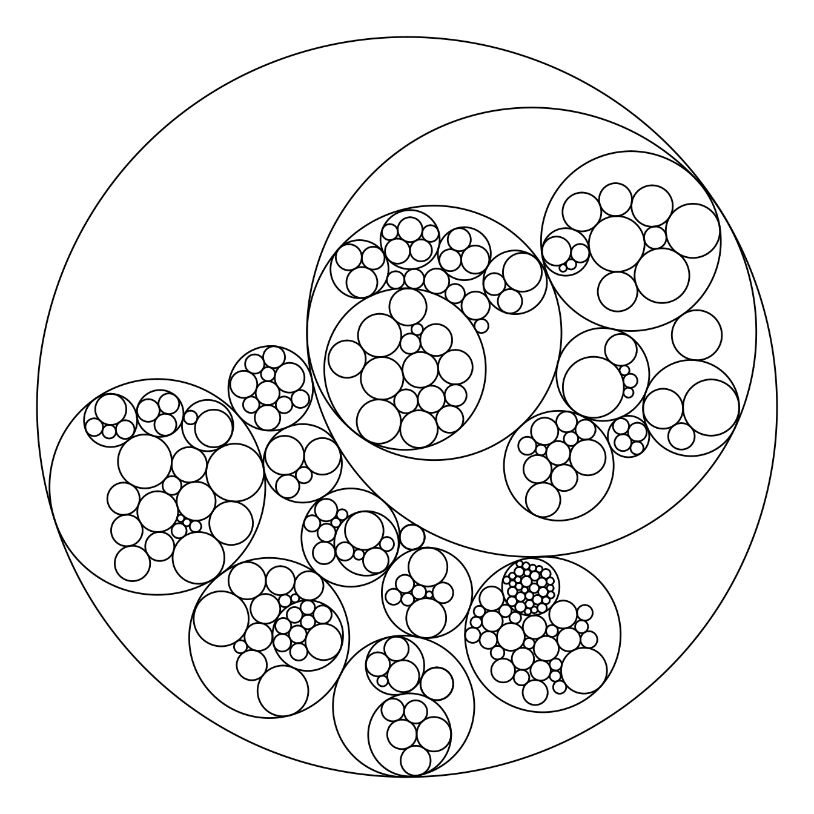
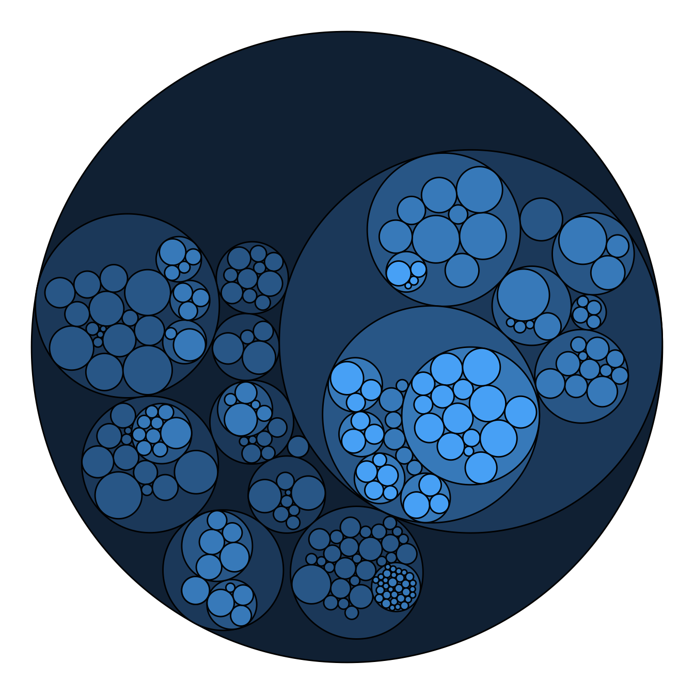
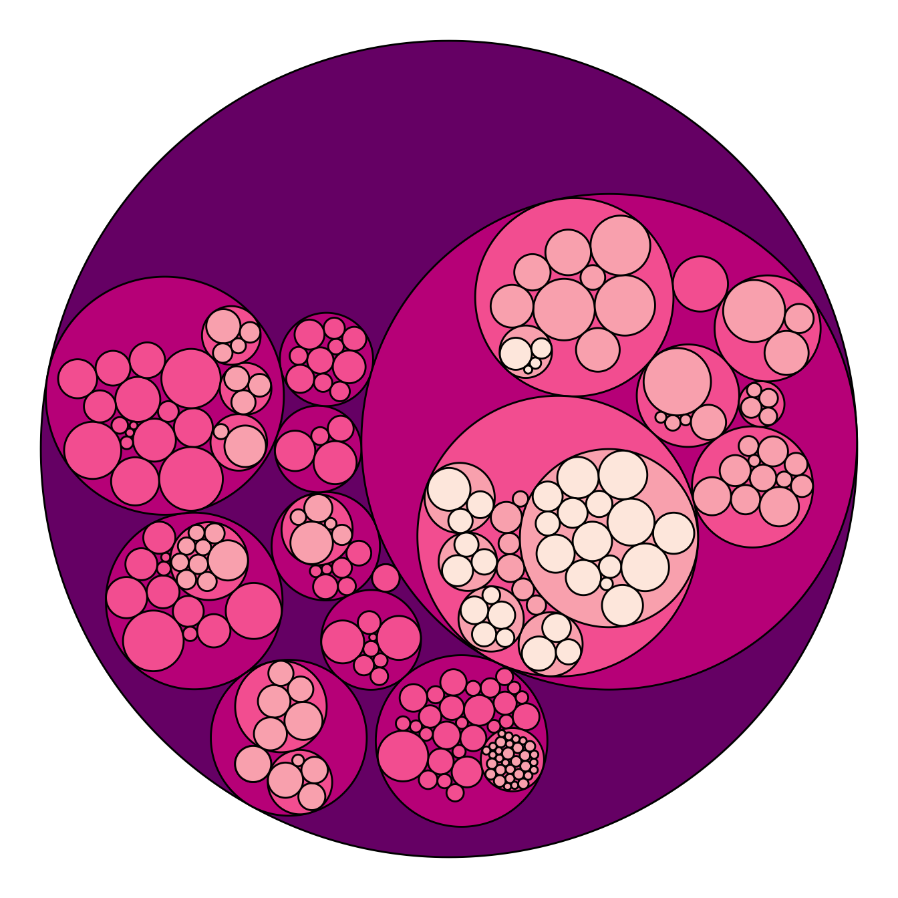
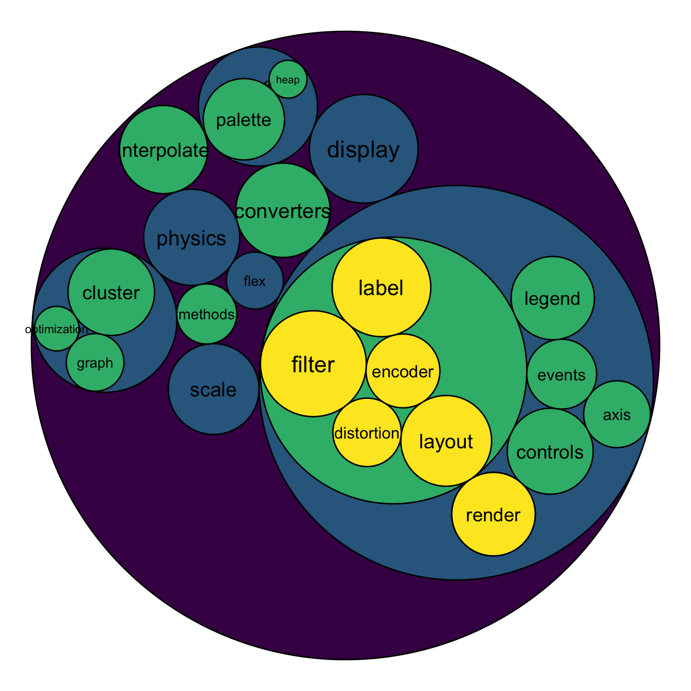
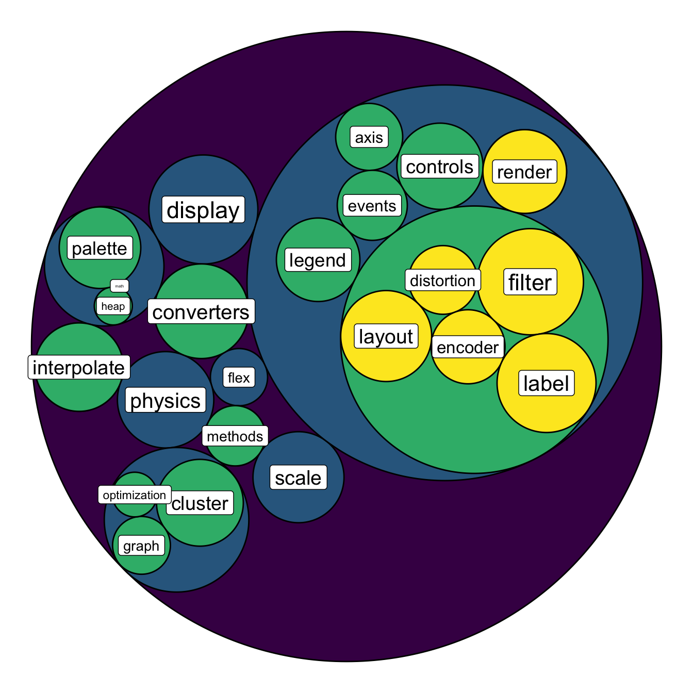

Bubble size proportionnal to a variable
Mapping the bubble size to a numeric variable allows to add an additionnal layer of information to the chart.
Here, the vertices data frame has a size column that is used for the bubble size. Basically, it just needs to be passed to the weight argument of the ggraph() function.

# Libraries
library(ggraph)
library(igraph)
library(tidyverse)
library(viridis)
# We need a data frame giving a hierarchical structure. Let's consider the flare dataset:
edges <- flare$edges
vertices <- flare$vertices
mygraph <- graph_from_data_frame( edges, vertices=vertices )
# Control the size of each circle: (use the size column of the vertices data frame)
ggraph(mygraph, layout = 'circlepack', weight="size") +
geom_node_circle() +
theme_void()Map color to hierarchy depth



Adding color to circular packing definitely makes sense. The first option is to map color to depth: the origin of every node will have a color, the level 1 another one, and so on..
As usual, you can play with the colour palette to fit your needs. Here are 2 examples with the viridis and the RColorBrewer palettes:
# Left: color depends of depth
p <- ggraph(mygraph, layout = 'circlepack', weight="size") +
geom_node_circle(aes(fill = depth)) +
theme_void() +
theme(legend.position="FALSE")
pMap color to hierarchy depth


To add more insight to the plot, we often need to add labels to the circles. However you can do it only if the number of circle is not to big. Note that you can use geom_node_text (left) or geom_node_label to annotate leaves of the circle packing:
# Create a subset of the dataset (I remove 1 level)
edges <- flare$edges %>%
filter(to %in% from) %>%
droplevels()
vertices <- flare$vertices %>%
filter(name %in% c(edges$from, edges$to)) %>%
droplevels()
vertices$size <- runif(nrow(vertices))
# Rebuild the graph object
mygraph <- graph_from_data_frame( edges, vertices=vertices )
# left
ggraph(mygraph, layout = 'circlepack', weight="size" ) +
geom_node_circle(aes(fill = depth)) +
geom_node_text( aes(label=shortName, filter=leaf, fill=depth, size=size)) +
theme_void() +
theme(legend.position="FALSE") +
scale_fill_viridis()